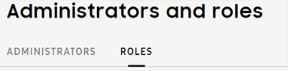
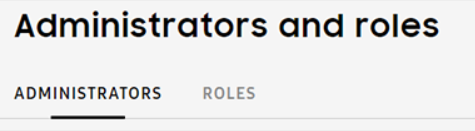

Set up your account
Last updated July 26th, 2023
When new to Knox Configure (KC), a Welcome carousel displays to provide an introduction for new users to get started with the main tasks required for customizing Samsung devices. The carousel is followed by an auto tour of the KC console to provide additional tool tips.
After the auto tour, you’ll need to register your approved reseller, add a license, invite an admin and add a supported wearable device to begin using KC for wearables.
Welcome carousel
When a new user initially signs in to the KC console, a get started carousel displays describing the main tasks required to add devices, create profiles, and assign and deploy devices.
Overview
When viewing the carousel, click > to continue with the auto tour, click < to return to the previous screen or click SKIP TOUR to bypass the introduction.
The following describes the get started carousel:
-
Welcome — During initial login to the KC console, a welcome screen will display.
The carousel describes how to start customizing devices using profiles created in the KC console. The user will navigate through an overview of the main tasks required when getting started with KC.
The carousel only displays during initial login.

-
Add devices — This screen provides the user instructions on how devices are added to KC.
The screen notifies the user that resellers upload purchased devices to their account on their behalf.
Alternatively, users can use the Knox Deployment App (KDA) to manually add devices using Bluetooth, NFC or Wi-Fi. The KDA app is available from the Google Play store.
-
Create profiles — This screen describes how to manage multiple profiles.
Use the KC console to add new profiles, edit existing profiles and delete obsolete profiles. Profiles are configured with custom settings to enable enterprises to customize Samsung devices.
For additional guidance on how to configure profiles, go to Create profiles.
As a requirement, a profile must be created prior to enrolling devices in KC.
-
Assign and deploy devices — This screen provides an introduction to the KC trial license as an easy way to start deploying devices right away.
For additional information on Knox Configure licenses, read License Management.
-
All set! — This screen ends the carousel introduction.
The end of the get started carousel will begin the KC auto tour. To start the auto tour to KC, click NEXT.
Auto tour
The KC auto tour consists of a series of tool tips within the KC console such as navigation tips, support resources and account information.
The auto tour only displays during initial login.
The auto tour tool tips point to the following console navigation options:
- Collapsible sidebar — Describes how to collapse the console sidebar navigation menu for console display optimization.
- Bulk actions — Describes how to access the KC bulk actions button from the left navigation sidebar for access to bulks actions from one location.
- Support and feedback — Describes the sidebar navigation buttons used to contact Samsung Support and provide feedback.
- Account information — Describes how to access your account icon to obtain your customer ID and sign out of the KC console.
Once you’ve completed the get started carousel and auto tour, the KC console navigates to the dashboard.
Register your reseller
Knox Configure enables resellers to automatically upload wearable devices on your behalf.
Locate a reseller
Contact your reseller to get their Reseller ID. If you don’t have a reseller, locate a reseller for your specific region:
-
On www.samsungknox.com click Solutions > Knox Configure.

-
Click Get Started to request access.
-
Scroll down, then click BUY FROM A RESELLER.
-
On the left, specify the following filters:
- Country — Select your country.
- Solutions — Select Knox Configure.
Once you’ve obtained your Reseller ID, you can then register your reseller on the Knox Configure console.
Register your reseller
Once you’ve obtained your reseller’s Reseller ID by contacting your local reseller, follow the steps below:
-
On the left-hand navigation menu, select Resellers.
-
Click REGISTER RESELLER.
-
Enter the Reseller ID and click LOOK UP. Select your reseller from the list of results.
-
Once the reseller is found, click REGISTER.
-
Choose an Upload Approval preference.
- Accept devices for this upload only — Approval is required for each upload from this reseller.
- Automatically accept all devices from this reseller — All existing and future uploads from this reseller will be automatically added to your device inventory. Choosing Automatically accept all devices from this reseller allows future device uploads to be automatically added to your profile without your additional consent.
-
Click SUBMIT.
-
Provide your Knox Customer ID to the reseller. If you do not know your Customer ID, select Manage Resellers from the upper-right-hand of the screen or click your acount icon to display your Customer ID.
Add a license
Begin by obtaining a valid license, then proceed to adding the license key to the KC console:
For additional details, read License management.
Obtain a valid license
There are two types of licenses available:
- Trial license — Used for development an testing. Trial licenses are valid for 3 months and can’t exceed 30 devices for both Setup and Dynamic edition profiles.
- Commercial license — Purchased from a Knox reseller. Commercial licenses are used for deploying devices for commercial use with either Setup or Dynamic profiles.
A single license can be utilized for both wearable and non-wearable devices.
Trial license
-
Select Licenses from the left-hand navigation.
-
Click GET A LICENSE.

-
Select Setup (Staggered) trial license or Dynamic (Per seat) trial license to generate a trial license for development and testing.
- The license will be valid for 3 months and for 30 devices.
-
Select GENERATE TRIAL LICENSE.
Purchase a commercial license
-
Select Licenses from the left-hand navigation.
-
Click GET A LICENSE.
-
Select FIND RESELLER to contact a reseller to purchase commercial licenses for commercial deployment.
Provide the reseller your Knox Customer ID to purchase commercial licenses for Samsung devices. Your customer ID can be found by clicking your account icon.
Add a license
Once you have a valid license key, follow the steps below to add the license key to your account:
-
Select Licenses from the left-hand navigation.
-
Click ENTER LICENSE KEY.
-
Enter the following information:
-
License name — Enter a name to be associated with the License key. You can later search for the license key using the license name when viewing your available licenses.
-
License key — After purchasing commercial licenses from your local reseller, enter the valid license key.
-
-
Click ADD.
Invite an admin
Knox Configure uses Role-Based Access Control (RBAC) to allow super admins to assign individual admins roles with custom permissions and access.
The super admin role is responsible for account creation, and when assigned, cuts across all supported Knox Configure.
Note that there’s a limitation to administrative roles and permissions:
- Only selected IT admins are approved to enroll and manage devices on behalf of customers.
- When inviting admins, a Managed role permission is required.
- Existing admins without a Managed role permission are limited to inviting admins to a role that matches their own set of role permissions.
Before inviting an admin, begin by creating a role to specify a unique set of permissions and access. Roles are then assigned to individual admins. Each Knox Configure account can be managed by multiple IT administrators. Note that additional administrators can be invited as needed.
For additional details, read the Manage administrators and roles feature page.
Create a role
Roles are assigned to admins to specify permissions and access as their specific enterprise requirements dictate. After a role is created with a unique set of permissions, the role can be assigned to admins.
To create a role:
-
Select Administrators and Roles from the left-hand navigation menu.
-
Select the ROLES tab.

-
On the top right, click CREATE ROLE.
-
Provide the following role details:

-
Role name — Enter unique name for the role to help you identify the newly created role during assignment.
-
Description — Enter a description for the role. Max 200 characters permissible.
-
Allow access to the Knox Configure portal — Admins with this role will be granted basic permissions. Note that additional permissions will need to be specified as needed.
-
Profiles — Add View only or Manage profile permissions. Add the ability to Create and edit and Delete to the role’s manage permissions.
-
Devices and Uploads — Add View only or Manage devices permissions. Add the ability to Assign and push update, Unassign, Reboot/Factory reset, Lock, Unlock, Manage tags and Delete to the role’s manage permissions.
-
Licenses — Add View only or Manage licenses permissions. Add the ability to Add and edit, and Delete to the role’s manage permissions.
-
Library — Add View only or Manage library permissions. Add the ability to Add,edit and download, and Delete to the role’s manage permissions.
-
Resellers — Add View only or Manage reseller permissions. Add the ability to Register and edit reseller, and approve uploads, and Delete to the role’s manage permissions.
-
Activity log — Add the permission to View activity log to the role.
-
Administrators and Roles — Specify the following role privileges: Invite and Manage administrators, and Manage roles.
The ability to Create and manage roles is a highly critical permission. Admins with this permission can also add and edit roles to include any permissions in the list.
-
Allow access to Knox Deployment Application — Admins with this permission can enroll devices in Knox Configure using the Knox Deployment Application.
-
-
Click Save.
Invite an admin
-
Launch the Knox Configure Portal though the Samsung Knox dashboard.
-
Select Administrators and roles from the left-hand navigation menu.
-
Click on the ADMINISTRATORS tab.

-
Click Invite Administrator on the top right of the screen.
-
In the Invite administrator window, enter the following information:
-
First name — Provide the first name of the administrator resource
-
Last name — Provide the last name of the administrator resource
-
Email address - If this email address is not already associated with a Samsung account, the user will have to create an account before signing in to Knox Configure.
-
Role — Select the custom role for the specified administrator. For additional information on creating roles, view Administrators and Roles.
- Note that you can click View Role Details to read more about the custom role.
-
-
Select INVITE when completed.
The newly added administrator displays by name, with the email address displaying as a link that can be selected to update the administrators name and company management designation.
Bulk invite admins
Multiple admins can be invited in a single bulk operation using a CSV file containing their names and email addresses:
-
Launch the Knox Configure Portal though the Samsung Knox dashboard.
-
Select Administrators and roles from the left-hand navigation menu.
-
Click on the ADMINISTRATORS tab.
-
Click Invite Administrator at the upper right-hand of the screen.
-
Click the invite multiple administrators link.
-
Click BROWSE to select a .csv file.
- Use the CSV file template for bulk invitations.
-
Select the custom role for the specified administrator.
- To read more about the custom roles, click View Role Details.
-
Click INVITE when completed.
The newly added administrator displays by name, with the email address displaying as a link that can be selected to update the administrators name and company management designation.
Add a wearable device to a profile
You can add a wearable device to Knox Configure prior to configuring a profile, or assign and deploy a profile to a device once a profile has already been configured.
Tutorial Progress
You’ve completed 1/4 steps! Next is to create a profile to customize your device settings, go to the next step.
On this page
Is this page helpful?